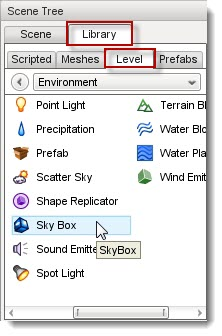
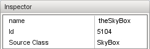
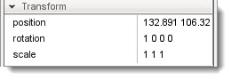
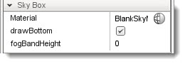
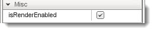
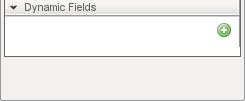

IntroductionTorque 3D uses a cubemap to produce the appearance of a sky in a level.
Adding a SkyboxTo add a new Skybox to a level: , change to the Library tab in the Scene Tree panel; cick on the Level tab; double-click the Environment folder; locate the Sky Box entry then double-click it. 
Skybox Properties
name: TypeName. Optional global name of this object. id : TypeCaseString. SimObjectId of this object. Read Only. Source Class : TypeCaseString. Source code class of this object. Read Only.', WIDTH, 450)" onmouseout="UnTip()" > position: MatrixPosition. Object world position. rotation : MatrixOrientation. Object world orientation. scale : Point3F. Object world scale.', WIDTH, 450)" onmouseout="UnTip()" > material: TypeMaterialName. The name of a cubemap material for the sky box. drawBottom : TypeBool. If false the bottom of the skybox is not rendered. fogBandHeight : TypeF32. The height (0-1) of the fog band from the horizon to the top of the SkyBox.', WIDTH, 450)" onmouseout="UnTip()" > isRenderEnabled: TypeBool. Only render if true (and if class is render-enabled, too).', WIDTH, 450)" onmouseout="UnTip()" >   (n/a): *. No stock dynamic values.', WIDTH, 450)" onmouseout="UnTip()" > ConclusionThe Skybox is one of the first objects you should create and add to your level. Not only does it set the mood of your level, but it also gives you a frame of reference while editing. Trying to move around a three dimensional world without a sky or terrain can be disorienting.
If you wish to learn more about the Skybox, you can read through the Creating A Sky Tutorial which contains a walkthrough of creating a sun, sky, and clouds for your level.
|